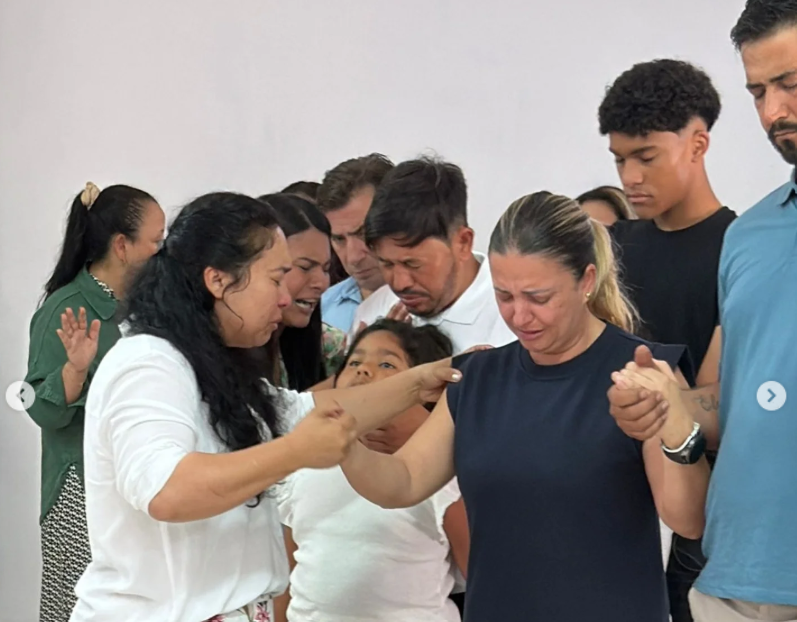
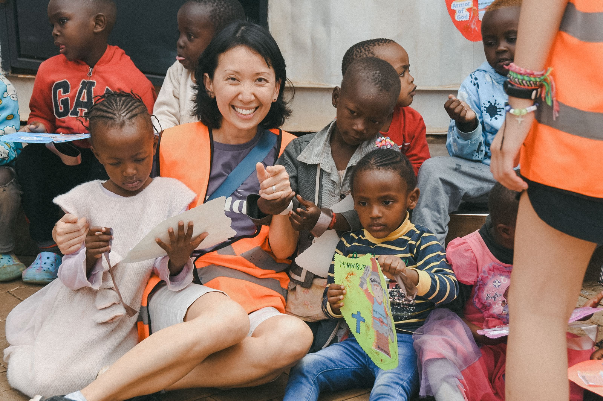

Cremos que um seguidor de Jesus Cristo é alguém que separa intencionalmente tempo para se encontrar com Deus todos os dias. Quando fazemos isso, crescemos em maturidade e experimentamos mais fruto para o Senhor. Ele é a videira, nós somos os ramos; separados dele nada podemos fazer.

Cremos que um seguidor de Jesus é alguém comprometido com a reunião semanal dos crentes. O culto de domingo é uma parte essencial da vida cristã. Reunimo-nos para adorar com cânticos, ouvir a Palavra pregada e desfrutar a bênção de estar com a família da igreja.
3. Tempo em grupo

Cremos que o seguidor de Jesus foi chamado para viver em comunidade com outras pessoas. Precisamos de amigos e família para nos encorajar, chorar conosco e celebrar conosco enquanto caminhamos pela vida juntos. Precisamos de outros que nos ajudem intencionalmente em nossa busca por Cristo.
4. Tempo de contribuir

Cremos que um seguidor de Jesus usa para Deus tudo o que recebeu. Seguidores de Cristo usam seus talentos, tempo e recursos para ver o Reino de Deus avançar. O seguidor de Jesus entrega a si mesmo com alegria, porque o Senhor ama quem contribui com alegria.
5. Tempo de ir

Cremos que o seguidor de Jesus vive ativamente a Grande Comissão. Ele dedica seu tempo e energia para levar o evangelho às nações, a fim de que os perdidos encontrem a fé salvadora em Jesus Cristo.